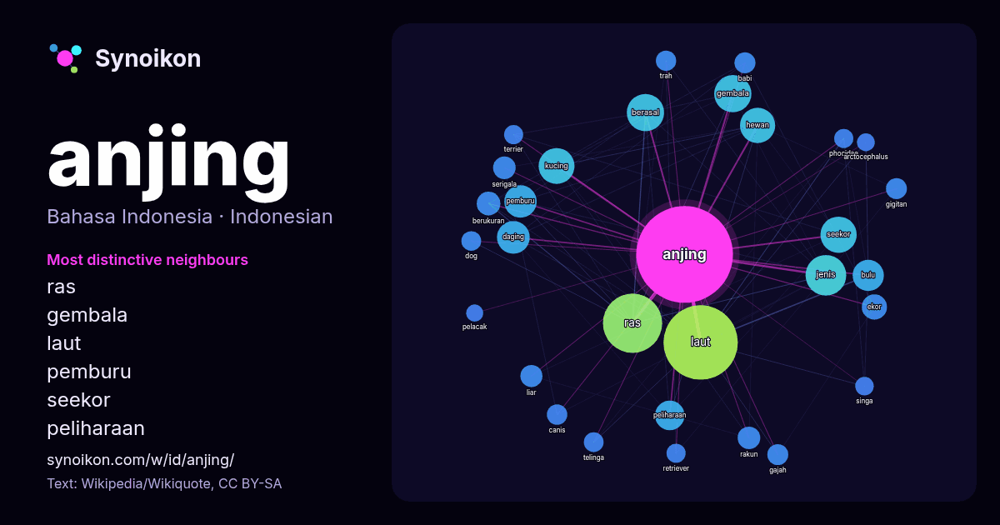

Bahasa Indonesia · kata populer
anjing
“dog” · Kata-kata di sekitarnya dalam 1402 kemunculan dari Wikipedia, Wikiquote.

Tetangga paling khas
- ras 93×
- gembala 51×
- laut 44×
- pemburu 37×
- seekor 36×
- peliharaan 32×
- kucing 30×
- bulu 27×
- daging 26×
- hewan 22×
- rakun 21×
- serigala 19×
- gigitan 17×
- canis 17×
- trah 17×
- ekor 16×
- dog 16×
- phocidae 16×
- retriever 16×
- terrier 16×
× = berapa kali lebih sering daripada di teks Wikipedia umum.
Tetangga paling sering
- laut 227
- ras 144
- jenis 68
- salah 59
- berasal 57
- gembala 57
- seekor 54
- kucing 53
- anak 51
- hewan 51
- bahasa 49
- memiliki 46
- daging 44
- pemburu 43
- bulu 40
- peliharaan 36
- nama 34
- dikenal 33
- orang 30
- spesies 30
Dalam konteks
- Anjing (Canis familiaris atau Canis lupus familiaris) adalah keturunan serigala yang telah didomestikasi. Juga disebut sebagai anjing domestik, hewan Wikipedia snippets · Anjing
- Anjing Setan atau The Hound of the Baskervilles adalah karya ketiga dari empat novel kejahatan yang ditulis oleh Sir Arthur Conan Doyle yang menampilkan Wikipedia snippets · Anjing Setan
- Shio anjing adalah salah satu dari ke-12 shio yang ada dalam penanggalan Tionghoa. Menurut kepercayaan Tionghoa, orang yang mempunyai shio anjing adalah Wikipedia snippets · Anjing (shio)
- Anjing gembala jerman (bahasa Inggris: German Shepherd, bahasa Jerman: Deutscher Schäferhund) adalah salah satu ras murni anjing yang populer. Ukurannya Wikipedia snippets · Anjing gembala jerman
- walrus), Otariidae (anjing laut bertelinga: singa laut dan anjing laut berbulu), dan Phocidae (anjing laut tanpa telinga, atau anjing laut sejati), dengan Wikipedia snippets · Anjing laut
- Anjing penggembala, juga dikenal sebagai anjing stok, atau anjing pekerja, adalah jenis anjing yang telah dilatih dalam penggembalaan atau masuk ke dalam Wikipedia snippets · Anjing gembala
- Gaya anjing (bahasa Inggris: doggy style) adalah salah satu posisi dalam persetubuhan. Dinamai begitu karena gayanya memang dilakukan persis seperti posisi Wikipedia snippets · Gaya anjing
- Rottweiler adalah jenis anjing domestik, dianggap menengah-ke-besar atau besar. Anjing-anjing itu dikenal dalam bahasa Jerman sebagai Rottweiler Metzgerhund Wikipedia snippets · Rottweiler
Kata lainnya
- air
- bahasa
- emas
- iklim
- jantung
- jembatan
- kebenaran
- kehidupan
- kekuasaan
- keluarga
- kematian
- kereta
- kerja
- kesehatan
- kesenian
- kucing
- lingkungan
- makanan
- sains
- sejarah
- tuhan
- uang
Dihitung sebelumnya pada 2026-10-09 dengan pengaturan bawaan (±5 kata, korpus sedang). Peta interaktif dapat memperbaruinya dengan data langsung.
Antarmuka diterjemahkan mesin; koreksi dipersilakan.